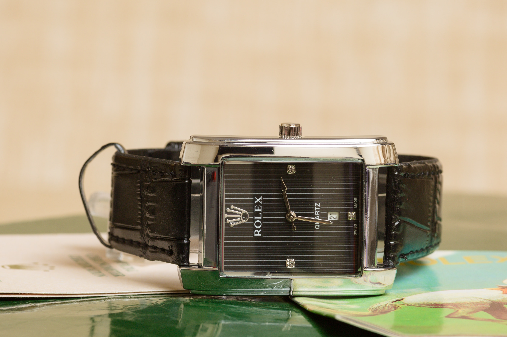

They use the finest materials. Rolex only uses the highest quality materials in their watches, including 904L stainless steel, which is more corrosion-resistant than other types of steel. They also use top-grade diamonds and other precious stones. They are incredibly well-made.
Rolex Oyster Perpetual Gold White Dial Men's Watches
Rolex Cosmograph Daytona Gold white Men's Watches

Rolex GMT Master II Gold White Silver Molting Women's Watches
They are quite well-built. Handcrafted with great care and attention to detail, Rolex watches are constructed. To make sure they live up to the high standards set by the organisation, they undergo extensive testing.They are adaptable and fashionable. Everyday wear or formal occasions are both appropriate settings for wearing a Rolex watch. To accommodate a range of tastes, they are available in several styles.
Smart Watch
Smartwatches are like small computers you wear on your wrist, and they’re not just for telling time. They can actually make a big difference in our lives, especially when it comes to keeping an eye on our health. One really great thing they do is help doctors and nurses take care of people from far away, through something called remote patient monitoring.
CMF by Nothing Watch Pro,1.96 Amoled Display,BT calling with AI noise reduction,GPS Smartwatch(Dark Grey Strap,Free Size)
Apple Watch Ultra II GPS + Cellular 49mm Titanium Case with Olive Alpine Loop - Small(Olive Green Strap,Free Size)
Beyond simply telling the time, these gadgets can track your fitness objectives, send and receive messages straight from your wrist, and receive notifications from your smartphone. Nowadays, the majority of individuals frequently lack basic knowledge about using smart watches.Children's smart watches can also be utilised as teaching aids. They can pick up new skills like vocabulary or math facts by using the programme. Fun and Entertainment: Kids may play games, listen to music, and even capture photos and videos with smart watches, which makes them enjoyable and amusing as well.
! . . Contact Us . . !
+918964567890
timelesstrends07@gmail.com
Time is both invaluable and valuable. It's the most exquisite gift you could give someone, but remember that time is something you can't purchase or sell. Although we may not realise it now, we will undoubtedly regret wasting time in the future. Your life will be ruined by time if you start wasting it.In fact, time is so crucial that without it, you would be unable to accomplish anything. Our time can be spent on a variety of activities, including job or study, raising a family, volunteering, and engaging in leisure activities like sleeping, watching TV, reading, or taking a stroll.